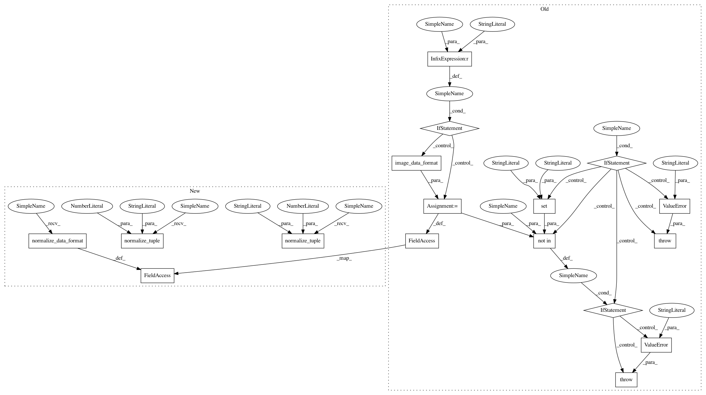

023331ec2a7b0086abfc81eca16c84a1692ee653,keras/layers/convolutional.py,Cropping3D,__init__,#Cropping3D#Any#Any#,1860
Before Change
def __init__(self, cropping=((1, 1), (1, 1), (1, 1)),
data_format="default", **kwargs):
super(Cropping3D, self).__init__(**kwargs)
if data_format == "default":
data_format = K.image_data_format()
self.cropping = tuple(cropping)
if len(self.cropping) != 3:
raise ValueError("`cropping` must be a tuple length of 3.")
if len(self.cropping[0]) != 2:
raise ValueError("`cropping[0]` must be a tuple length of 2.")
if len(self.cropping[1]) != 2:
raise ValueError("`cropping[1]` must be a tuple length of 2.")
if len(self.cropping[2]) != 2:
raise ValueError("`cropping[2]` must be a tuple length of 2.")
if data_format not in {"channels_last", "channels_first"}:
raise ValueError("data_format must be in {"channels_last", "channels_first"}.")
self.data_format = data_format
self.input_spec = [InputSpec(ndim=5)]
def build(self, input_shape):
After Change
def __init__(self, cropping=((1, 1), (1, 1), (1, 1)),
data_format=None, **kwargs):
super(Cropping3D, self).__init__(**kwargs)
self.data_format = conv_utils.normalize_data_format(data_format)
if isinstance(cropping, int):
self.cropping = ((cropping, cropping),
(cropping, cropping),
(cropping, cropping))
if hasattr(cropping, "__len__"):
if len(cropping) != 3:
raise ValueError("TODO")
dim1_cropping = conv_utils.normalize_tuple(cropping[0], 2,
"1st entry of cropping")
dim2_cropping = conv_utils.normalize_tuple(cropping[1], 2,
"2nd entry of cropping")
dim3_cropping = conv_utils.normalize_tuple(cropping[2], 2,
"3rd entry of cropping")
self.cropping = (dim1_cropping, dim2_cropping, dim3_cropping)
else:
raise ValueError("`cropping` should be either an int, "
"a tuple of 3 ints "
In pattern: SUPERPATTERN
Frequency: 3
Non-data size: 17
Instances
Project Name: keras-team/keras
Commit Name: 023331ec2a7b0086abfc81eca16c84a1692ee653
Time: 2017-02-09
Author: francois.chollet@gmail.com
File Name: keras/layers/convolutional.py
Class Name: Cropping3D
Method Name: __init__
Project Name: keras-team/keras
Commit Name: 023331ec2a7b0086abfc81eca16c84a1692ee653
Time: 2017-02-09
Author: francois.chollet@gmail.com
File Name: keras/layers/convolutional.py
Class Name: Cropping3D
Method Name: __init__
Project Name: keras-team/keras
Commit Name: 6710396acaf62b40ba01fadd9d488d6641995d83
Time: 2017-02-09
Author: francois.chollet@gmail.com
File Name: keras/layers/pooling.py
Class Name: _Pooling3D
Method Name: __init__
Project Name: keras-team/keras
Commit Name: 023331ec2a7b0086abfc81eca16c84a1692ee653
Time: 2017-02-09
Author: francois.chollet@gmail.com
File Name: keras/layers/convolutional.py
Class Name: Cropping2D
Method Name: __init__